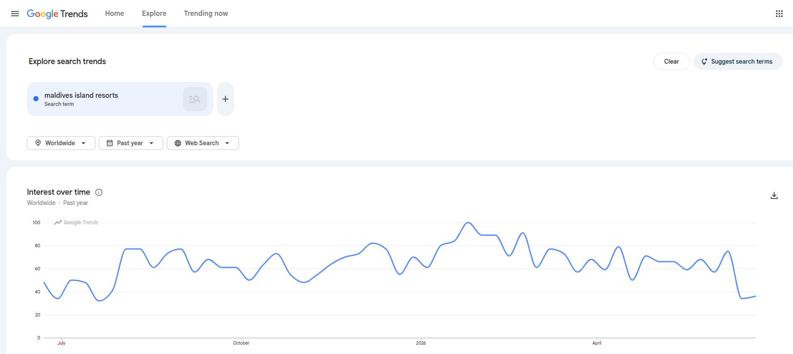
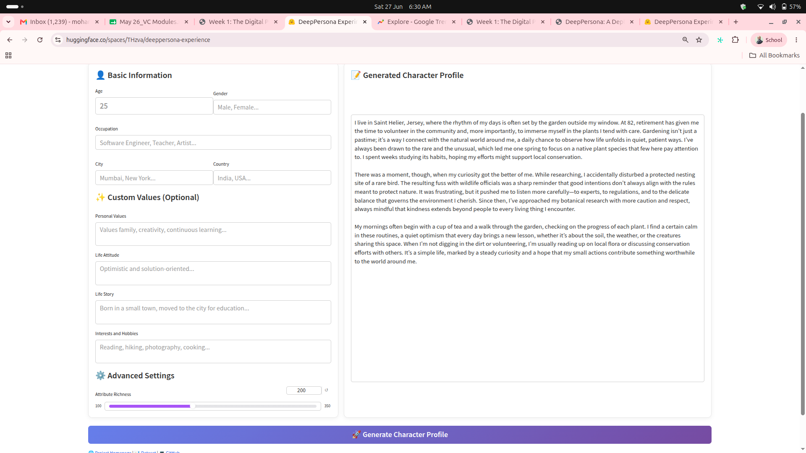

| Prompt Number | Purpose | Prompt Used | AI Output Used | Evidence Link | Student Decision |
|---|---|---|---|---|---|
| 1 | Generate search routes | Paste the exact prompt or cite the appendix item | Attach full output or cite appendix item; state what was used, changed, or rejected | Connect to screenshot, source, query, or reference | Explain why the output was accepted, revised, or rejected |
| 2 | Interpret documented traces | Paste the exact prompt or cite the appendix item | Attach full output or cite appendix item; state what was used, changed, or rejected | Connect to screenshot, source, query, or reference | Explain why the output was accepted, revised, or rejected |
| 3 | Review persona and media plan | Paste the exact prompt or cite the appendix item | Attach full output or cite appendix item; state what was used, changed, or rejected | Connect to screenshot, source, query, or reference | Explain why the output was accepted, revised, or rejected |
Week 1 Tutorial: Evidence, Persona, and Media Plan
Tutorial Trends + Market Insights
Discussion
1 Concept Check & Footprint
⏱ 25 min
Moodle three-question quiz and topic confirmation; classify ten digital statements in pairs; challenge two with AI.
Investigation
2 Trends Evidence
⏱ 30 min
Capture screenshots with query strings, date ranges, geographic filters, and related queries. Complete worksheet rows.
Investigation
3 Interpretations + Market Insights
⏱ 30 min
Write competing interpretations of a Trends trace; capture market insight data from DataReportal, Market Finder, or equivalent; apply U&G or social contagion theory to revise one channel decision.
Production
4 Persona + Media Plan
⏱ 25 min
Draft evidence-grounded one-paragraph persona; build five-day media plan with goal, channel, message, format, and metric.
Assessment
5 Peer Audit & Upload
⏱ 10 min
Peer evidence checklist; author responds to one comment; submit PDF to Moodle before leaving.
AI-Assisted Evidence Protocol
AI improves the learning task when students use it as a reasoning tool: testing interpretations, comparing alternative formulations, organising evidence, and checking consistency. Evidence collection and student judgement remain the student’s responsibility throughout. Students may use AI to generate search terms, compare possible interpretations, draft alternative persona wording, and evaluate whether a media plan is consistent. Every AI-assisted claim in the submission must be accompanied by the public trace, source detail, prompt, output, and the student’s own decision.
The governing principle is no evidence, no claim. If AI suggests that an audience is price-sensitive, anxious, ambitious, confused, or ready to buy, the student must connect that claim to a documented trace or remove it. AI output belongs in the reasoning process as a working note; it becomes a source only when the underlying trace has been documented and cited.
Use a simple workflow during the tutorial and independent study. First, define the campaign scope and ask AI to challenge whether the topic is too broad. Second, generate search routes by asking AI for keywords, related questions, platforms, and public sources. Third, collect public traces yourself; direct evidence collection remains your responsibility throughout. Fourth, ask AI for possible interpretations of the documented traces. Fifth, classify statements into evidence, inference, assumption, and recommendation. Sixth, draft the persona and media plan only after evidence has been documented. Finally, audit the submission by checking whether every claim is linked to evidence or marked as an assumption.
Prompt Rules
Prompts should make AI work with evidence rather than invent content. A useful prompt includes the campaign topic, audience scope, source details, copied public text or a short description of the screenshot, and a request to separate evidence, inference, assumption, and recommendation.
Use prompts like these:
I am studying a Week 1 digital marketing task. Campaign topic: [topic].
Audience scope: [specific audience].
Public trace: [describe the trace and source].
Query/platform/date range/date collected: [details].
Separate this into evidence, possible inference, assumption, and possible campaign recommendation.
Stay within what the trace shows. List what the trace leaves uncertain.Here are three documented public traces from my evidence worksheet:
1. [trace with source detail]
2. [trace with source detail]
3. [trace with source detail]
Suggest two possible persona descriptions of three to four sentences.
For each sentence, identify which evidence point supports it.
Mark unsupported claims as assumptions.Review this one-week media plan:
[paste plan]
Check whether the objective, channel, message, format, resource constraint, and metric align.
Identify any claim that needs evidence.
Keep all audience claims supported by documented evidence.Students should keep a prompt log and attach the AI output in an appendix, or provide a clear appendix reference where the full output can be checked. The prompt log serves as a verification record that allows the teacher to inspect the prompt, the output, the evidence link, and the student’s decision; it goes well beyond a declaration that AI was used. Table 1 gives the required structure.
Tutorial Task
In your two-hour tutorial, you will apply the chapter method to produce your first campaign artefact. The session follows a structured sequence: orientation, Trends evidence, market insight evidence, persona drafting, media mix planning, peer sharing, and upload. Work through the steps in the same order as the chapter: define your audience context, gather public traces, interpret them as signals, state what remains uncertain, and translate the results into a persona and a one-week plan.
Choose a narrow campaign topic. Topics framed around a general demographic, such as “young people” or “travellers”, generate unfocused evidence and produce personas with no practical direction. A topic anchored in a specific situation, such as “working adults considering a weekend digital skills workshop” or “tourists seeking local food experiences in Malé”, produces traceable evidence and a persona that can justify specific channel and message decisions.
During the tutorial, complete four tasks.
- Use Trends to capture interest over time, regional comparison, and related queries.
- Use a market insight source (DataReportal, Market Finder, or equivalent) to identify priority markets and market cues.
- Draft a one-paragraph persona from the documented signals.
- Build a one-week media plan with channel, message, format, resource constraint, and metric.
Then complete the evidence worksheet in Table 2. At least one evidence item must come from Trends, at least one from a market insight source (DataReportal, Market Finder, or an equivalent public source), and at least one from a credible contextual source.
| Evidence Item | Source and Platform | Query, Date Range, and Collection Date | Footprint Observed | Audience Signal | What It Cannot Prove | AI Prompt Number |
|---|---|---|---|---|---|---|
| Trace 1: search trend | Google Trends or equivalent trend source | Record exact query, filter, region, date range, and date collected | Describe what the trace shows; record the raw observation only | State the cautious interpretation | State the limit of the trace | Link to prompt log |
| Trace 2: regional or related-query signal | Google Trends, platform search, public question, review, or conversation source | Record exact query, filter, region, date range, and date collected | Describe what the trace shows; record the raw observation only | State the cautious interpretation | State the limit of the trace | Link to prompt log |
| Trace 3: market insight | Market insight source (DataReportal, Market Finder, or equivalent) | Record product/service/category, market filters, region, and date collected | Describe what the market cue shows; record the raw observation only | State the cautious interpretation | State the limit of the market cue | Link to prompt log |
| Trace 4: contextual source | Public report, dataset, institutional source, or academic source | Record exact query, filter, region, date range, and date collected | Describe what the trace shows; record the raw observation only | State the cautious interpretation | State the limit of the trace | Link to prompt log |
Use the evidence to draft a one-paragraph persona. Keep it descriptive: grounded in evidence and written in plain language. Then build a one-week media plan with channel, message, format, resource constraint, and metric. The plan should visibly use the lecture anchors: Web participation, digital footprints, ethics, uses and gratifications, social contagion, and goals-to-channels alignment.
If a particular tool is unavailable, use an equivalent public source. Search result pages, public statistics portals, public reviews, Wikimedia pageviews, and platform search can all support early audience thinking.
In-Class Activities
Your two-hour tutorial runs through an opening concept check and six activities. Work through them in order: each one produces an output that feeds into the next, and together they build the evidence base for your persona and media plan.
Opening Concept Check (5 minutes)
Your tutor will open a three-question Moodle quiz at the start of the session. Complete it individually and without notes. Your response is anonymous and used only to help your tutor adjust the session focus. Keep a note of the question you found most difficult: that is where your self-directed reading should concentrate this week.
NoteMoodle Concept Check: Week 1
Open the Week 1 Concept Check quiz in Moodle under the Week 1 activities panel.
Question 1. Which of the following is a digital footprint rather than a deliberate personal choice?
- Publishing a blog post about your opinion on a local news event
- A page-view record stored automatically by a website analytics system
- Posting a review of a restaurant on TripAdvisor
- Uploading a photograph to your business Instagram account
Question 2. Uses and gratifications theory argues that people choose media primarily because:
- Platform algorithms determine what content they see
- They actively seek to satisfy specific needs such as information, entertainment, or social connection
- Organisations push messages at the moment of intended purchase
- They have no access to alternative information sources
Question 3. In the evidence framework, which label best fits the statement “Rising searches for ‘digital marketing course’ may suggest growing interest in professional training in this sector”?
- Evidence
- Inference
- Assumption
- Recommendation
Activity 1: Footprint or Signal? (20 minutes)
Format: Pairs | Output: Completed classification table plus AI challenge note | Timing: Opening 20 minutes of tutorial
The ten statements below come from different types of digital source: search tools, review platforms, community forums, open data portals, and social media. Read each one and classify it. Some are raw footprints recorded by a system before anyone has interpreted them. Others are already interpretations presented as if they were plain observations. The distinction is deliberate.
The ten statements:
- Searches for “digital marketing course Maldives” increased by 42 per cent over the twelve months to December 2025, according to Google Trends.
- A TripAdvisor review reads: “The villa was beautiful but there was no information about how to reach it from the ferry terminal. More location photographs would help.”
- The Google Trends related queries panel for “small business marketing” in the Maldives lists “Facebook page setup” and “Instagram tips for business” as the top two rising queries.
- DataReportal’s Maldives Digital Report shows that 97 per cent of internet users in the Maldives access the internet via mobile devices.
- A Reddit thread in r/maldivesnomads has 47 upvotes on a post titled “Best atolls for remote workers” with 23 comments, most asking about coworking spaces and connectivity.
- A YouTube video titled “How to run Facebook Ads for your guesthouse” has 8,200 views and 143 comments.
- A local guesthouse owner writes in a Facebook business group: “We get most of our bookings through Instagram direct messages, not through our website.”
- The World Bank Open Data portal shows mobile cellular subscriptions in the Maldives at 209 per 100 people in 2023.
- An Avas.mv headline reads: “Young Maldivians prefer digital payments over cash, new survey finds.”
- A Facebook post in a Maldives tourism group has been shared 312 times, with 87 comments asking for booking information.
Steps:
Working with your partner, classify each statement using one label from the five below. Record your classification and a one-sentence reason in the table.
Select two statements where you and your partner disagreed or felt uncertain. For each, write an AI prompt asking it to challenge your classification. Record the prompt, the AI output, and your final decision.
Write one sentence: which type of label appeared most often across the ten statements, and what does that suggest about the reliability of typical digital marketing evidence?
| Statement | Label | One-sentence reason |
|---|---|---|
| 1 | ||
| 2 | ||
| 3 | ||
| 4 | ||
| 5 | ||
| 6 | ||
| 7 | ||
| 8 | ||
| 9 | ||
| 10 |
TipThe five categories
Footprint: raw activity recorded by a system before any human interpretation. A page-view count, a search query volume, a click record.
Evidence: a documented, citable trace with source details and a collection date. A footprint becomes evidence when it is recorded with full provenance.
Inference: a cautious interpretation of documented evidence. Marked by hedges such as “may suggest”, “could indicate”, or “is consistent with”.
Assumption: a claim about audience behaviour that has not been supported by a documented trace. Often stated confidently, without any hedge.
Recommendation: a proposed campaign action. What to do next, rather than what the evidence shows.
Tool Reference
NoteFree Tool: Google Trends
Google Trends is a free, publicly accessible service from Google that shows how search interest in a term or topic changes over time, compares interest across regions, and surfaces related queries and rising topics. No account is required.
In this tutorial’s context: Use Google Trends to document search interest for your campaign topic. Capture the search term, time range, geographic filter, a screenshot of the interest-over-time chart, and the top five related queries. Each item becomes a documented evidence entry in your worksheet. The screenshot above shows a worked example: the search term “maldives island resorts”, Worldwide, past 12 months, collected June 2026. Notice that the interest line stays between 35 and 100 throughout the year, with a peak around January 2026, suggesting sustained global interest with a seasonal high in early 2026.
Free tier: Fully free, no sign-in required.

Tutorial task: At trends.google.com, search for your campaign topic. Set the region to the Maldives and the time range to the past 12 months. Screenshot the interest chart and the top related queries. In your evidence worksheet, classify the trend line as Evidence, the interpretation of rising interest as Inference, and any claim about buying intent as [ASSUMPTION].
Activity 2: Trends and Market Insight Capture (35 minutes)
Format: Individual | Output: At least two completed rows in the evidence worksheet | Timing: Main evidence-collection block
Using the evidence worksheet in Table 2, capture at least one trace from Google Trends and one from a market insight source. Record the source details before writing any interpretation.
Google Trends steps:
- Go to trends.google.com. Enter a search term related to your campaign topic.
- Set the region (Maldives or a relevant country), the time period (past twelve months is a useful starting range), and the category if relevant.
- Take a screenshot of the interest-over-time chart.
- Take a second screenshot of the related queries panel.
- Record the exact query, region, date range, and the date you took the screenshots.
- In the worksheet, describe the footprint: what does the chart show? Record the observation; the interpretation comes in the next step.
- Write one cautious inference using hedged language.
- Write one limit: what would further evidence be needed to confirm?
Market insight source (choose one):
NoteOption A: DataReportal Country Reports (recommended)
DataReportal publishes free annual digital reports for most countries, including the Maldives. No account required. Each report covers internet users, social media penetration, mobile connections, and platform preferences.
- Go to datareportal.com/reports and search for your target country.
- Open the most recent report and screenshot the key statistics panel.
- Record the source (DataReportal, country, year, slide number), the statistic shown, and the collection date.
- Describe the footprint, write one cautious inference, write one limit.
NoteOption B: Google Market Finder (requires a published website)
Market Finder identifies priority export markets based on a live website URL. Use this option only if you have a published website for your campaign topic.
- Go to marketfinder.thinkwithgoogle.com and enter your website URL.
- Browse the priority markets list and screenshot the top results.
- Record the URL entered, market filters, region, and collection date.
- Describe the footprint, write one cautious inference, write one limit.
NoteOption C: Other public market insight sources
If neither of the above applies, use any of the following:
- Think with Google: consumer and market insight articles, free, no account
- World Bank Open Data: internet access, mobile subscriptions, population data by country
- GSMA Intelligence: mobile and internet usage statistics
- Statista: some country and platform statistics visible without an account (screenshot what is visible)
Record the source name, URL, statistic or chart title, date, and collection date.
Collect your Trends screenshots and your market insight screenshots before using AI to interpret either. If you use AI for interpretation, add the prompt, output, and your decision to the prompt log.
Activity 3: Competing Interpretations (10 minutes)
Format: Individual | Output: One-paragraph reasoning note | Timing: Immediately after the Trends evidence block, before Market Finder
Read the trace description below. Complete the three steps.
Trace: Google Trends data for the Maldives shows that searches for “online course” in the twelve months to January 2026 increased by 68 per cent year on year. The top related queries include “online certificate programmes”, “diploma in business management online”, and “evening classes Male”. The interest is concentrated in Male atoll. Date collected: 15 January 2026.
Step 1. Write three possible interpretations of this trace. Use hedged language throughout: “this may suggest”, “one possibility is”, “this could indicate”.
Step 2. Ask AI for three possible interpretations of the same trace. Record the exact prompt you used.
Step 3. Compare your three interpretations with the AI’s three. Select the single most defensible interpretation across both sets. In two sentences, explain why it is stronger than the alternatives. In a third sentence, state what evidence would be needed to confirm it rather than infer it.
TipThe strongest interpretation
The strongest interpretation is the one closest to what the trace actually shows, with the fewest added assumptions. An interpretation that adds audience motivation, emotion, or purchase intent that is not visible in the trace is an assumption presented as an inference. If your chosen interpretation is stronger than the AI’s suggestions, state specifically why.
Activity 4: Theory into a Campaign Decision (10 minutes)
Format: Individual | Output: Completed decision-change table | Timing: During the Market Finder evidence block, running alongside capture
Apply either uses and gratifications theory or social contagion theory to revise one decision in your emerging media plan. Complete the table below. Every row must be based on your evidence worksheet or labelled as an assumption.
| Element | Your entry |
|---|---|
| Campaign topic | |
| Original channel or message decision | |
| Theory applied (Uses and Gratifications or Social Contagion) | |
| Specific principle from the theory | |
| Revised decision | |
| Evidence item from your worksheet that supports the revision |
NoteWorked example (for reference only)
| Element | Example |
|---|---|
| Campaign topic | Weekend digital skills workshop for guesthouse owners in Male |
| Original decision | Promote via a general Facebook feed advertisement |
| Theory applied | Uses and gratifications |
| Specific principle | The audience uses Facebook to solve specific business problems (information seeking), not for entertainment |
| Revised decision | Use targeted posts in Facebook business groups focused on tourism management; frame the message as a “how to” answer rather than a promotional headline |
| Evidence | Google Trends related query “how to market guesthouse online” captured in Trace 3 of the evidence worksheet |
NoteFree Tool: DeepPersona
DeepPersona is a free, browser-based persona generator that produces a narrative character profile from form inputs. No sign-in or installation required. It runs directly in the browser via Hugging Face Spaces.

How to use it with your evidence:
DeepPersona is form-based, not prompt-based. Fill in each field using your evidence worksheet rather than inventing details. The table below maps each form field to an evidence source.
| Form field | What to enter | Evidence source |
|---|---|---|
| Age | The age range suggested by your public signals | Trends data, platform demographic reports, or contextual source |
| Gender | Leave blank unless a public trace clearly indicates a skew | Only complete if a credible report supports this |
| Occupation | The role or situation visible in your public traces | Related queries, review language, forum questions |
| City / Country | The location suggested by your geographic Trends data or market insight source | Trends interest-by-region panel or DataReportal country report |
| Personal Values | Values implied by the language used in public reviews or questions | Forum posts, review text, social content themes |
| Life Attitude | The orientation suggested by the tone and framing of public discussions | Qualitative reading of review or forum language |
| Life Story | A brief situation description grounded in your evidence | Contextual source, report, or combined trace reading |
| Interests and Hobbies | Activities visible in the public traces | Review content, related queries, social post themes |
| Attribute Richness | Set to 200 for a detailed output | Default setting |
Click Generate Character Profile. Then review the output paragraph by paragraph. For each claim, ask: can you link it to a documented trace from your evidence worksheet? If yes, label it Evidence or Inference. If the claim goes beyond what any trace shows, label it [ASSUMPTION]. A generated profile that survives this check is a useful drafting scaffold. One that produces mostly [ASSUMPTION] labels is a signal to return to the evidence collection step.
Activity 5: Draft Your Persona and One-Week Media Plan (25 minutes, continues in self-study)
Format: Individual | Output: One-paragraph persona and completed media plan table | Timing: Final session block
Part A: Persona (15 minutes)
Write a single paragraph of four sentences. Use the seven-element template from the chapter:
[Audience segment: who they are and their role or situation] who [situation or problem they face right now]. They are motivated by [what they are trying to accomplish or resolve], but their main barrier is [the specific obstacle the campaign must address]. They tend to [media habits: where and how they seek information or make decisions]. This persona is grounded in [evidence summary: name the traces that support the description]; the assumption that [key assumption] would require further primary research to confirm.
Fill in each bracketed field. Every claim must either reference a trace from your evidence worksheet by number (for example, “Trace 2 shows…”) or be labelled [ASSUMPTION]. Remove the bracket instructions and read the paragraph aloud to check it flows naturally.
Seven elements to verify before moving to Part B:
| Element | Question to ask |
|---|---|
| Audience segment | Is this grounded in a public trace rather than assumed? |
| Situation or problem | Which trace reveals this need? |
| Motivation | Does a Uses and Gratifications or contagion signal support this? |
| Barrier | Is this specific enough to change a campaign decision? |
| Media habits | Which trace shows where or how they seek information? |
| Evidence summary | Are all named traces documented in the worksheet? |
| Key assumption | Is this the one claim that most needs primary research? |
After writing, swap your paragraph with your partner. Check that every sentence cites a trace number or carries [ASSUMPTION]. Return with one suggested revision, apply it, then move to Part B.
Part B: Media Plan (5 minutes in session, continues in self-directed study)
Start a five-day plan in session and complete it during your six self-directed hours. Every channel, message, and metric decision must either reference a trace from your evidence worksheet by number or be labelled [ASSUMPTION].
| Day | Goal | Channel | Message summary (one sentence) | Format | Resource constraint | Metric |
|---|---|---|---|---|---|---|
| Monday | ||||||
| Tuesday | ||||||
| Wednesday | ||||||
| Thursday | ||||||
| Friday |
Goals to choose from: Awareness / Question-answering / Enquiry generation / Sharing / Decision support. The five days should progress through these stages, beginning with attention on Monday and building toward action or decision by Friday.
Before submitting, confirm each row answers these questions:
- Does the metric match the channel’s primary purpose?
- Does the message address the specific barrier named in the persona?
- Does the goal reflect where the audience is in their decision journey on that day?
Activity 6: Peer Evidence Audit and Upload (10 minutes)
Format: Pairs | Output: Completed audit checklist; written author response; uploaded PDF | Timing: Final ten minutes
Exchange your evidence worksheet with a partner. As the reviewer, complete the checklist below for each evidence item in your partner’s worksheet. Return the checklist with brief written comments. As the author, read the comments, respond to at least one before uploading, and note which gap you will address in your self-directed study hours.
Reviewer checklist (complete for each evidence item):
| Check | Pass or Needs Work | Comment |
|---|---|---|
| Source is named (platform, URL, or publication title) | ||
| Exact query or access method is recorded | ||
| Date range and collection date are both recorded | ||
| Footprint is described separately from the interpretation | ||
| Inference uses hedged language (may suggest, could indicate) | ||
| At least one trace limit is stated | ||
| If AI was used, a prompt-log reference is included |
Reviewer verdict (one sentence): Is this worksheet primarily evidence-based, assumption-based, or a mix? What is the single most important correction before the final submission?
Author response (one sentence before uploading): Which comment identified the most significant gap in your worksheet, and what specific change will you make in your self-directed hours?
Full submission requirements
The PDF you upload in this session is your draft. The final submission (due by the Moodle deadline) must include all of the following:
- Campaign topic (one sentence)
- Completed evidence worksheet with at least four items, all fields filled
- AI prompt log with at least three entries
- One-paragraph persona with evidence links checked
- Five-day media plan with all columns completed
- A 300-word reflection covering: (a) what the evidence supports, (b) one assumption that needs primary research to confirm, and (c) one ethical limit of using public traces for marketing decisions
- One named primary research method you would use to test your key assumption
- Reference list in APA format (include Google Trends and your market insight source as references)
Upload format: Export your document as a single PDF named W01_[FirstnameSurname]_Persona.pdf (in Word: File > Export > PDF; in Google Docs: File > Download > PDF). Upload to the Week 1 Tutorial Submission folder in Moodle before leaving the session.